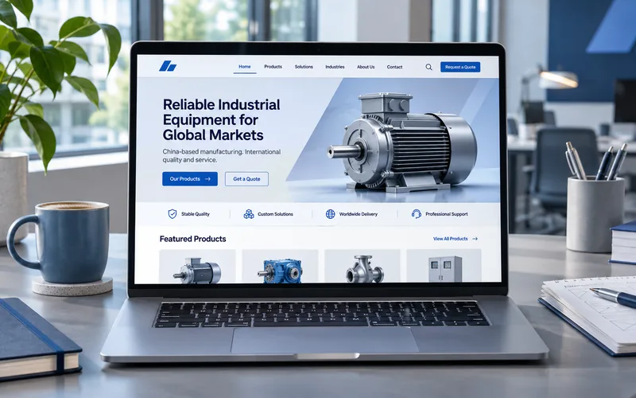
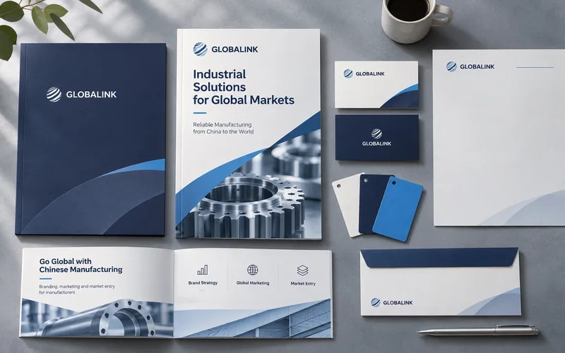
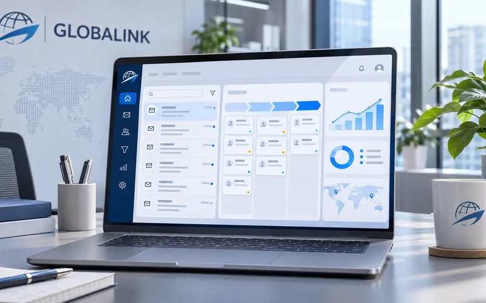
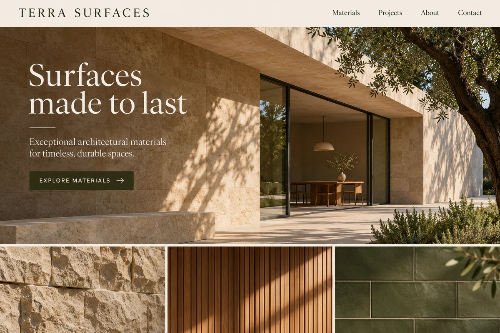
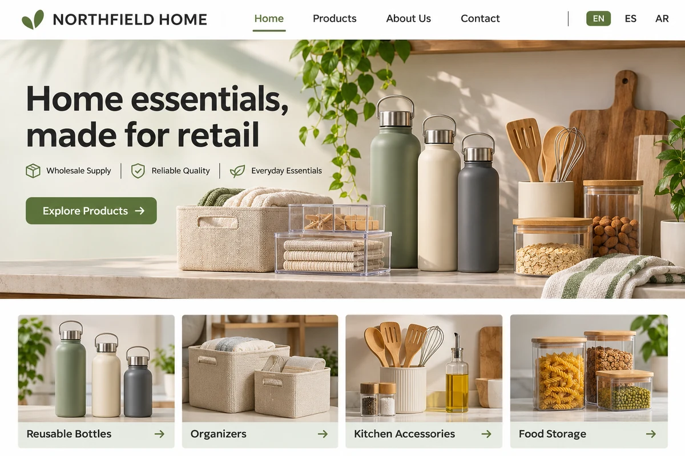

出海服务平台
视频与直播
- 视频和直播平台，适合发布产品演示、安装教程与品牌故事。
- 短视频平台，适合用产品实拍和使用场景触达海外受众。
- 以直播为主的平台，适合实时演示、活动和社群互动。
- 视频托管平台，适合在官网嵌入品牌片和产品视频。
- 视频发布平台，可用于分发品牌和产品视频。
社交与沟通
- 社交平台，可通过品牌主页、群组和广告触达海外客户。
- 以图片、短视频和动态为主，适合展示产品和品牌视觉。
- 职业社交平台，适合建立企业形象、拓展 B2B 客户和合作伙伴。
- 即时通讯工具，适合承接海外询盘、发送资料和跟进客户。
- 实时社交平台，适合发布企业动态和参与行业讨论。
- 视觉灵感搜索平台，适合展示家居、服饰和设计类产品。
- 话题社区平台，适合了解目标市场的真实讨论和需求。
- 以短视频和限时动态为主，适合创意内容和品牌推广。
- 以文字和话题讨论为主，可用于发布品牌动态和互动。
- 即时通讯工具，支持群组和频道，可发布资讯和维护社群。
- 支持分频道交流的社群平台，适合维护用户和产品社区。
- 即时通讯工具，可用于与客户沟通及运营品牌官方账号。
电商平台
- 综合电商平台，企业可上架商品，面向各站点的消费者销售。
- 支持一口价和拍卖的电商平台，适合多品类跨境零售。
- 沃尔玛线上市场，第三方卖家可通过 Marketplace 销售商品。
- 电商平台，以原创设计、手工制品和复古商品为特色。
- 内容电商平台，可通过短视频和直播展示并销售商品。
- 电商平台，覆盖东南亚等市场，支持品牌开店和本地化销售。
- 东南亚电商平台，可用于商品上架和跨境零售。
- 面向海外消费者的跨境零售平台，支持商家开店销售。
- 跨境 B2B 平台，适合展示产品、承接批量采购和外贸询盘。
- 拉丁美洲电商平台，可用于当地市场的商品销售。
- 面向消费者的跨境电商平台，支持多品类商品销售。
- 日本电商平台，可通过乐天市场开店销售商品。
- 俄罗斯电商平台，提供商品上架和线上销售渠道。
- 印度电商平台，覆盖电子产品、服饰和家居等品类。
建站与搜索
- 独立电商建站平台，支持商品管理、结账与订单处理。
- WordPress 电商插件，可为网站添加商品、购物车和结账功能。
- 内容管理系统，适合建设企业官网、产品目录和内容站。
- 搜索和广告渠道，可通过 SEO 与搜索广告触达有明确需求的客户。
企业出海服务方案
从外贸独立站和英文品牌建设，到海外内容推广与询盘跟进。
外贸营销型独立站
不是做一个网站，是建一套「按 Google 规则运转」的询盘获客资产。
- 场景化产品落地页体系
- 目标市场节点部署，首屏 ≤ 2 秒
- 结构化数据 + 询盘直达 WhatsApp



外贸独立站作品展示
三个行业的首页设计样例，展示产品、品牌和询盘入口如何组织。

机械装备
按应用场景组织的产品站
首页按采购场景组织产品入口，让海外买家更快找到适用设备和对应的产品资料。

建筑材料
英文品牌官网
用建筑实景、材料纹理和项目应用展示品牌风格，方便买家了解选材范围。

消费品
多语言询盘站
用清楚的语言切换和产品分类组织内容，让不同市场的买家更快找到产品与询盘入口。
400+
日均自然访问
90+
累计有效询盘
11家
成交海外客户
−60%
单询盘成本下降
建站、品牌与获客，由同一团队交付
从产品怎么介绍，到海外买家怎么找到你、发来询盘，方案在同一团队内衔接。
团队交付范围
- 外贸独立站
- 页面策划、开发与 SEO
- 英文品牌
- 命名、视觉与产品资料
- 海外内容
- 多语言内容制作与推广
- 询盘跟进
- 线索分类、提醒与自动跟进
一个团队对接
品牌、网站和运营围绕同一份方案推进，产品资料和目标市场信息可以在各环节复用。
上线前规划获客路径
从页面结构和搜索关键词，到产品资料和询盘入口，建站时就把买家路径串起来。
上线后跟踪询盘
记录询盘来源，分类并跟进线索，用阶段复盘决定下一步该改哪些页面和内容。
谁来交付您的项目
由主理人直接对接。技术、品牌和运营在同一团队协作，您可以通过一个窗口确认方案和进度。
- 项目主理人
- 直接对接需求，确认服务范围，跟进进度、验收与复盘。
- 技术交付
- 负责外贸独立站开发、移动端适配、搜索基础与询盘接入。
- 品牌策划与设计
- 负责英文品牌定位、视觉和面向海外买家的产品资料。
- 海外内容与运营
- 按约定范围制作多语言内容，跟进线索并整理阶段数据。

合作怎么开始
从第一次沟通到上线复盘，提前了解每一步需要您配合什么、会收到什么。
需求沟通与诊断
- 您这边配合
- 产品资料、目标市场，以及现有官网或获客渠道。
- 您会拿到
- 当前问题梳理和优先改进项。
确认方案与报价
- 您这边配合
- 确认服务范围、交付周期和项目对接人。
- 您会拿到
- 分项报价、交付清单和验收标准。
实施与上线验收
- 您这边配合
- 在关键节点确认设计、文案和上线版本。
- 您会拿到
- 阶段进度、约定交付物及相关文件和账号。
上线后 90 天复盘
- 您这边配合
- 同步销售跟进情况和有效询盘反馈。
- 您会拿到
- 访问、搜索与询盘数据复盘，以及下一步优化建议。
报告会检查什么
- 访问体验
- 加载速度、移动端适配
- 搜索可见性
- 产品页内容、应用场景和结构化数据
- 询盘路径
- 联系方式、表单和跟进入口